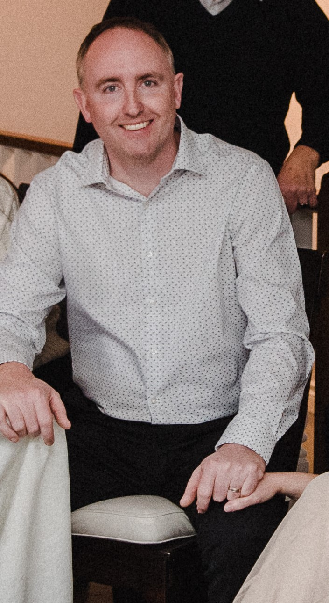

← Follow Us!
← Follow Us!
"I was raised in beautiful Kamloops, British Columbia and attended Arthur Stevenson and David Thompson Elementary schools and graduated from Westsyde Secondary a proud Whunda alumni. I will never forget the bright yellow flying V’s as I watched what I remember was my first televised Canucks game as a five year old in 1982. My favourite player in those initial years was Patrick Sundstrom, a smooth skating Swedish forward who was eventually traded to New Jersey for Captain Kirk McLean. Trevor Linden became my favourite player when he was drafted 2nd overall in 1988. For years I watched many games with my parents and my aunt and uncle. We would all gather in their living room for playoff games, waving our white towels, celebrating Roger Neilson’s epic protest. The playoff runs in ‘94 and 2011 were unforgettable, both going to game 7 and unfortunately both ending in disappointment. Along the journey I have always had an opinion and passion to discuss everything and anything about the Vancouver Canucks, so when my buddy from high school suggested we start a podcast I was very excited. Watching the Canucks has never been so enjoyable as we dissect and analyse the roster, the play and the managerial decisions weekly on our show. I invite you to listen and follow us on twitter, give your opinions for us to discuss and be the passionate, loyal fans that we are."
| Sun | Mon | Tue | Wed | Thu | Fri | Sat |
|---|---|---|---|---|---|---|
1  |
2 | 3 |
4 |
5 | 6 | 7 |
| 8 | 9 | 10 |
11 |
12 |
13 | 14 |
| 15 |
16 | 17 |
18 |
19 |
20 | 21 |
| 22 | 23 |
24 | 25 |
26 | 27 | 28 |
| 29 |
30 | 31 | ||||